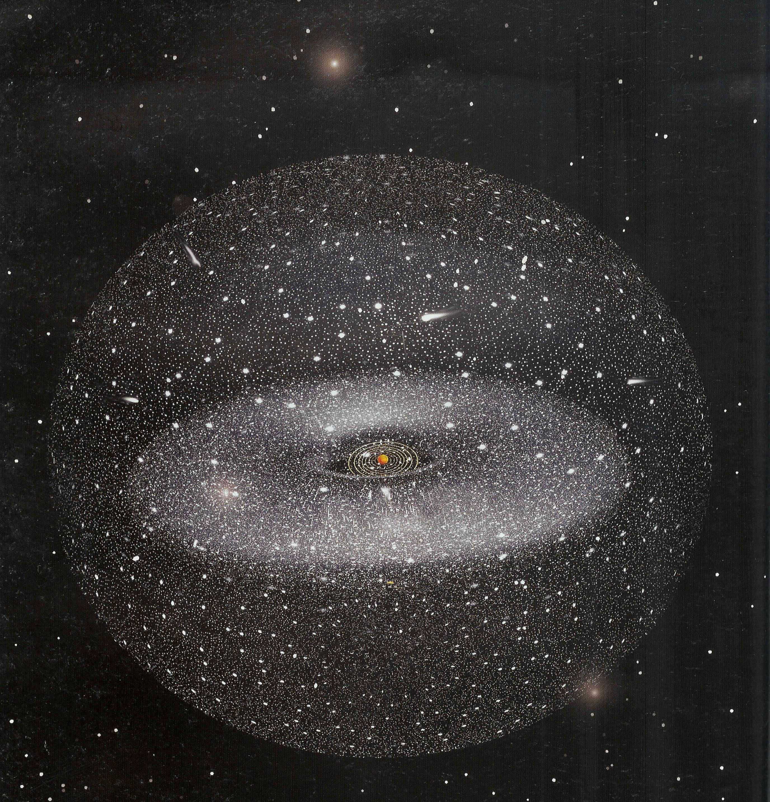
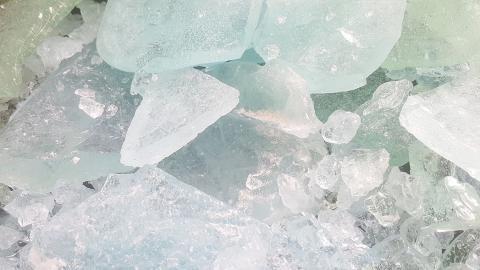

¿Que es un cinturon de asteroides?
El cinturón de asteroides es un disco circunestelar del sistema solar que se encuentra entre las órbitas de Marte y Júpiter. Alberga multitud de objetos astronómicos de formas irregulares, denominados asteroides, y al planeta enano Ceres. Esta región también se denomina cinturón principal con la finalidad de distinguirla de otras agrupaciones de cuerpos menores del sistema solar, como el cinturón de Kuiper o la nube de Oort.

Más de la mitad de la masa total del cinturón está contenida en los cinco objetos de mayor masa: Ceres, Palas, Vesta, Higia y Juno. Ceres, el más masivo de todos y el único planeta enano del cinturón, tiene un diámetro de 950 km y una masa del doble que Palas y Vesta juntos. La mayoría de cuerpos que componen el cinturón son mucho más pequeños. El material del cinturón, apenas un 4 % de la masa de la Luna, se encuentra disperso por todo el volumen de la órbita, por lo que sería muy difícil chocar con uno de estos objetos en caso de atravesarlo. No obstante, dos asteroides de gran tamaño pueden chocar entre sí, formando las que se conocen como familias de asteroides, que poseen composiciones y características similares. Las colisiones también producen un polvo que forma el componente mayoritario de la luz zodiacal. Los asteroides pueden clasificarse, según su espectro y composición, en tres tipos principales: carbonáceos (tipo-C), de silicato (tipo-S) y metálicos (tipo-M).

El cinturón de asteroides se formó en la nebulosa protosolar junto con el resto del sistema solar. Los fragmentos de material contenidos en la región del cinturón habrían podido formar un planeta, pero las perturbaciones gravitacionales de Júpiter, el planeta más masivo, produjeron que estos fragmentos colisionaran entre sí a grandes velocidades y no pudieran agruparse, resultando en el residuo rocoso que se observa en la actualidad. Una consecuencia de estas perturbaciones son los huecos de Kirkwood, zonas donde no se encuentran asteroides debido a resonancias orbitales con Júpiter, y sus órbitas se tornan inestables. Si algún asteroide pasa a ocupar esta zona es expulsado en la mayoría de los casos fuera del sistema solar, aunque en ocasiones puede ser enviado hacia algún planeta interior, como la Tierra, y colisionar con ella. Desde su formación se ha expulsado la mayor parte del material